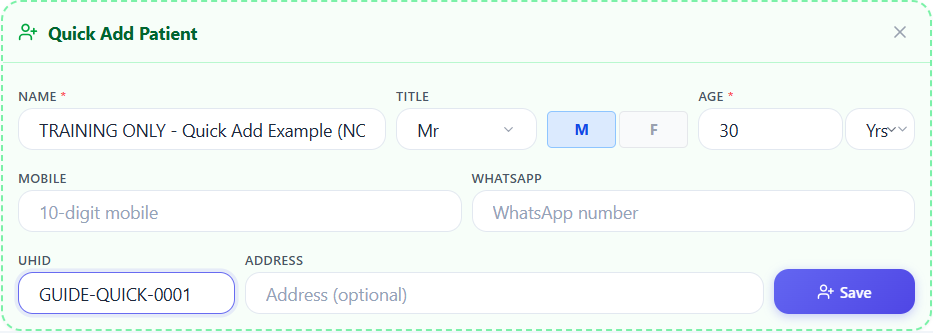
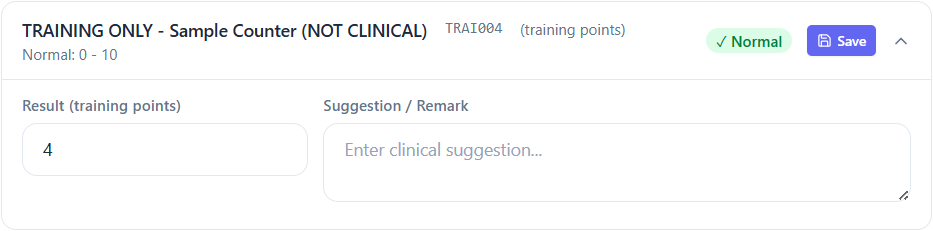
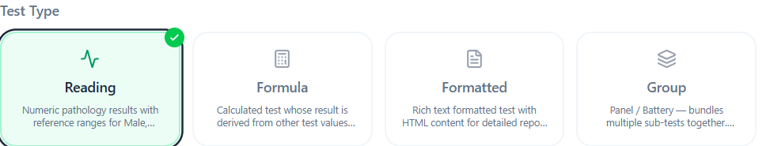

चित्र बड़ा करने के लिए उसके ऊपर चित्र बड़ा करें दबाएँ। पूरा चित्र देखने के लिए नीचे की पट्टी बाएँ या दाएँ खींचें। वापस आने के लिए चित्र पेज पर फिट करें दबाएँ। बटन न दिखे तो ब्राउज़र का ज़ूम प्रयोग करें।
अधूरा और अप्रमाणित मसौदा: इस अनुवाद की भाषा जानने वाले व्यक्ति और प्रयोगशाला प्रशासक से जाँच कराएँ। इसे रोगी की देखभाल या परिणाम जारी करने का निर्देश न मानें। अधिक जानकारी अंग्रेज़ी मार्गदर्शिका में है; उसकी भी सभी प्रक्रियाएँ पूरी तरह नहीं जाँची गई हैं।
Partial draft; not reviewed by a fluent speaker or laboratory administrator. Do not use it as clinical or report-release instructions.
अंग्रेज़ी मार्गदर्शिका / English guide1. कंप्यूटर और लॉगिन
- माउस का तीर बटन पर ले जाकर बायाँ बटन एक बार दबाएँ। इसे क्लिक कहते हैं। लिखने के लिए बॉक्स पर क्लिक करें और कीबोर्ड से लिखें।
- नीचे देखने के लिए माउस का पहिया घुमाएँ। * वाला बॉक्स भरना आवश्यक है। सूची में नाम लिखने के बाद सही सुझाव पर क्लिक भी करें।
- MLab खोलें। Organization / Lab Code, अपना User ID और Password भरकर Sign In दबाएँ। पासवर्ड किसी को न बताएँ।
2. नया रोगी और Patient Entry
- Main → Patient Entry → New खोलें। Company Account में सही कंपनी खोजकर सूची से चुनें।
- Patient में नाम, UHID या फ़ोन से खोजें और सही व्यक्ति चुनें। पहचान जाँचें; दोबारा रोगी न बनाएँ।
- रोगी न मिले और अनुमति हो तो New Patient दबाएँ। नाम और उम्र भरें; उम्र की इकाई, Title और उपलब्ध M/F विकल्प जाँचें। ज़रूरत अनुसार सत्यापित फ़ोन, WhatsApp, UHID और पता भरें।
- Quick Add के अंदर Save दबाएँ। यह केवल रोगी को सेव करता है। फिर रेफ़र करने वाला डॉक्टर, अधिकृत टेस्ट/पैकेज और राशि जाँचें। Patient Entry का अलग Save दबाएँ और वाउचर नोट करें।

- नाम
- Title, M/F, उम्र और इकाई
- फ़ोन और WhatsApp
- UHID और पता
- रोगी को Save करें; पंजीकरण अलग से सेव करें।
3. Reading भरना
- Main → Readings खोलें। वाउचर या रोगी पहचान से खोजें और सही Lab Entry चुनें। रोगी, टेस्ट और विभाग दोबारा जाँचें।
- जहाँ आवश्यक हो, अधिकृत Signing Doctor और वास्तविक Lab Technician चुनें। डॉक्टर सूची में न मिले तो प्रशासक से पूछें; अनुमान से किसी और को न चुनें।
- टेस्ट के Result में केवल जाँचा हुआ वास्तविक परिणाम भरें। Formula के लिए स्रोत मान जाँचकर Calculate दबाएँ। Group में हर उप-टेस्ट जाँचें।
- कार्ड का Save एक बार दबाएँ, संदेश देखें और रिकॉर्ड फिर खोलकर जाँचें। Save या Auto-Verified का मतलब यह नहीं है कि चिकित्सकीय समीक्षा या रिपोर्ट जारी हो गई है।

- टेस्ट और इकाई जाँचें।
- Result में जाँचा हुआ मान भरें।
- जाँच के बाद Save दबाएँ।
डेमो में सेव की हुई रीडिंग पर पूरी सीमा नहीं दिखी। चिकित्सकीय निर्णय से पहले स्वीकृत सीमा अलग से जाँचें। अंग्रेज़ी में समस्या देखें।
4. टेस्ट, दर, डॉक्टर और कंपनी
- अधिकृत व्यक्ति Masters → Tests → New में Reading (संख्या), Formula (गणना), Formatted (लिखित रिपोर्ट) या Group (कई उप-टेस्ट) चुनें। नाम, विभाग, श्रेणी और प्रकार के अनुसार फ़ील्ड भरें। Group में कम से कम दो उप-टेस्ट दिखे।
- सीमाएँ, फ़ॉर्मूला, नमूना और रिपोर्ट सामग्री केवल प्रयोगशाला के स्वीकृत दस्तावेज़ से लें। प्रशिक्षण मान न कॉपी करें। सेव करने के बाद रिकॉर्ड फिर खोलकर जाँचें।
- Masters → Rates में सही टेस्ट और कंपनी चुनकर स्वीकृत दर भरें। Masters → Doctors में सत्यापित डॉक्टर जोड़ें। Masters → Accounts में सही प्रकार का कंपनी/सप्लायर खाता बनाएँ।

- Reading: संख्या
- Formula: गणना
- Formatted: लिखित सामग्री
- Group: कई उप-टेस्ट
चारों टेस्ट प्रकार के पूरे चरण अंग्रेज़ी में · दर का पूरा विवरण
5. उपयोगकर्ता, अधिकार और रिपोर्ट
- प्रशासक System → Admin Panel → Add User से उपयोगकर्ता बनाए। हर व्यक्ति का अलग खाता रखें और पासवर्ड निजी रूप से दें।
- System → Menu Rights → Role Permissions में Roles के पास + से भूमिका बनाएँ। लोड पूरा होने दें; हर View, Create, Edit, Delete, Print और Export अधिकार जाँचें। केवल स्वीकृत न्यूनतम अधिकार सेव करें और अलग खाते से जाँचें।
- Reports में सही रिपोर्ट चुनें, तारीख और फ़िल्टर जाँचें, फिर Generate करें। परिणाम मूल रिकॉर्ड से मिलाएँ। डेमो में Purchase Register के सप्लायर फ़िल्टर और सारांश में अंतर मिला; बिना मिलान के सारांश पर भरोसा न करें।
- त्रुटि आए तो बार-बार Save न दबाएँ। पेज का नाम और संदेश लिखकर प्रशासक से संपर्क करें; पासवर्ड या अनावश्यक रोगी जानकारी साझा न करें। काम पूरा होने पर Sign Out करें।
प्रशासक के पूरे चरण अंग्रेज़ी में · रिपोर्ट सूची · ज्ञात समस्याएँ